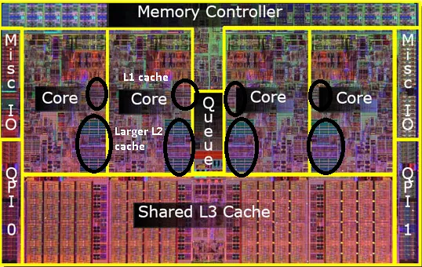
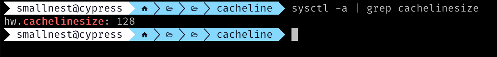
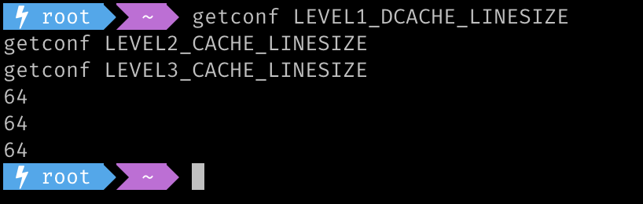
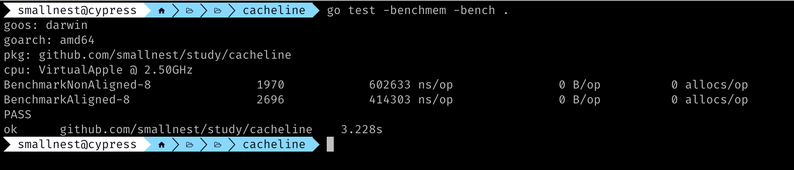
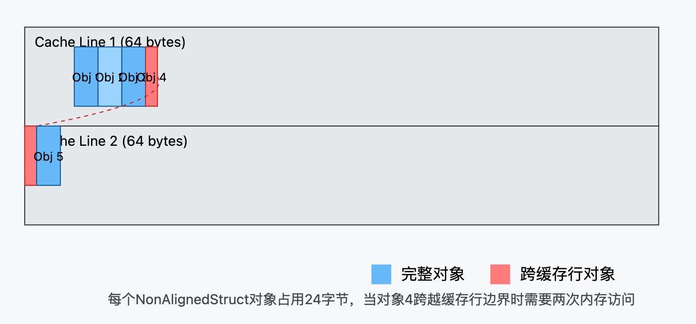
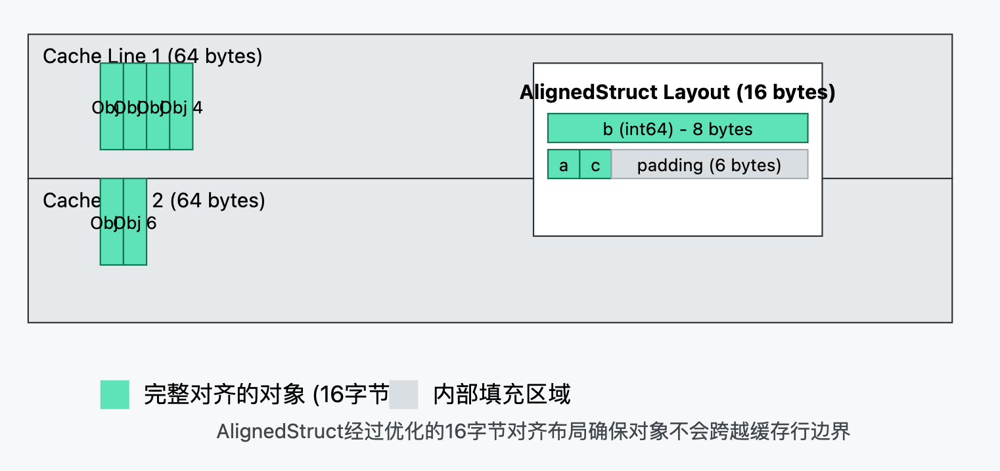

在现代多核处理器中，高效的缓存机制极大地提升了程序性能，而“伪共享”问题却常常导致缓存机制的低效。
1. 背景
cacheline 本文中有时又叫做 缓存行
在现代多核处理器中，三级缓存通常分为三级：L1、L2 和 L3，每一级缓存的大小、速度和共享方式都不同：
L1 缓存：这是速度最快的缓存，通常每个 CPU 核心都有独立的 L1 缓存。L1 缓存分为两个部分：一个用于存储指令（L1I），另一个用于存储数据（L1D）。L1 缓存的容量一般较小（通常 32KB - 64KB），但是读取速度极快，以极低的延迟为 CPU 核心提供服务。
L2 缓存：L2 缓存通常比 L1 缓存大一些，容量一般在 256KB - 1MB 左右，每个 CPU 核心通常也会有独立的 L2 缓存。虽然 L2 缓存的访问速度比 L1 缓存稍慢，但它仍然显著快于主存。
L3 缓存：这是三级缓存中容量最大的，通常在 8MB - 64MB 或更大。L3 缓存往往由所有 CPU 核心共享，并且主要用于减少核心之间的数据传输延迟。L3 缓存的读取速度比 L1、L2 缓存慢，但相对主存依然较快。对于多核处理器，L3 缓存是多核心之间协作的重要纽带。

CPU缓存将数据划分成若干个 cacheline，使得 CPU 访问特定数据时，能以 cacheline 为单位加载或存储数据。cacheline 的大小通常是固定的，x86 架构中常见的 cacheline 大小是 64 字节，而 Apple M 系列等一些 ARM 架构处理器上可能达到 128 字节。
在 CPU 执行程序时，若数据在某级缓存中命中，整个 cacheline 会从该缓存加载到寄存器中；若数据不在 L1 缓存中，则会依次查找 L2、L3 缓存，并最终在主存中查找并加载到缓存。由于 cacheline 是缓存操作的基本单位，每次数据传输都是以 cacheline 为最小粒度的。
比如在 mac mini m2 机器是，我们可以查看此 CPU 的缓存行大小为 128 字节：

Linux 下可以查看另外一台机器的各级别缓存行大小为 64 字节：

1.1 伪共享 (False Sharing)
伪共享 是指多个线程访问同一个 cache line 中的不同变量时，导致频繁的缓存失效（cache invalidation），从而大大降低程序性能。伪共享通常在多线程编程中发生，因为在多个线程中，如果两个或多个线程操作的变量在同一个 cache line 中，但它们并没有真正的共享关系，每个线程对其变量的写操作会导致其他线程的缓存失效。这样，CPU 核心会不断地将数据写回并重新加载，产生了不必要的资源浪费。
设有两个线程，各自操作两个独立的变量 x 和 y：
|
|
如果变量 x 和 y 位于同一个 cache line 中，那么线程 A 更新 x 后，线程 B 也会因为缓存失效而重新加载 y，尽管 B 实际上并未使用 x 的值。这种情况下，虽然两个变量并没有直接共享，但每次写操作都会导致另一方的缓存失效，从而形成了伪共享。
1.2 如何避免伪共享？
伪共享会对性能产生严重影响，但可以通过以下几种方法来优化：
- 变量对齐（Padding）：将每个变量扩展至一个完整的
cacheline，以防止多个线程访问同一个cacheline。例如，可以在变量之间添加填充数据来分隔不同的cacheline(假定 CPU 缓存行是 64 字节)：
|
|
- 将变量分散到不同的结构体中：对于经常被多个线程更新的变量，可以考虑将它们分散到不同的结构体，避免同一结构体被多个线程同时频繁更新。
- 使用原子变量：在某些情况下，可以使用原子变量进行更新。虽然这不会彻底消除伪共享，但可以减少缓存一致性带来的开销。
- 绑定 CPU 核心（CPU Affinity）：可以将线程绑定到指定的 CPU 核心上，从而减少多个线程同时访问同一块缓存的数据的几率。
1.3 单线程的缓存行污染问题
虽然单线程不会出现伪共享的问题，但是单线程程序仍然有一些缓存优化的空间：
- 避免缓存行污染：在单线程程序中，如果频繁访问的变量分布在不同的 cache line 上，会导致缓存频繁更替，增加缓存开销。优化时可以将频繁使用的数据集中在同一个 cache line 内，减少 CPU 从内存加载数据的频率。
- 数据布局优化：对于单线程程序，也可以通过调整数据的内存布局，让程序更好地利用缓存。将经常一起访问的数据放在连续的内存中，以提高缓存命中率。
比如下面一个测试，
|
|

可以看到读取对齐的结构体性能要远远好于未对齐的结构体。


很多高性能的库都会采用 CacheLine 优化的数据结构，比如 Java 生态圈知名的 LMAX Disruptor。 Go 标准库中也有类似的优化，让我们一起来看看它的实现和应用场景。
2. Go 运行时中的 CacheLine
2.1 运行时中的 CacheLinePad
我们支持，Go 语言支持不同的 CPU 架构，不同的 CPU 架构的缓存行的大小也可能不同，Go 语言是如何统一的呢？
方法很简单，就是针对不同的 CPU 架构，定义不同大小的缓存行。
首先定义统一的结构和变量:
|
|
然后针对不同的 CPU 架构定义不同的缓存行大小。
比如arm64的CPU, 文件go/src/internal/cpu/cpu_arm64.go中定义了缓存行大小为128字节：
|
|
比如64bit的龙芯， 缓存行大小是64字节，文件go/src/internal/cpu/cpu_loong64.go中定义了缓存行大小为64字节：
|
|
又比如x86和amd64的CPU， 缓存行大小是64字节，文件go/src/internal/cpu/cpu_x86.go中定义了缓存行大小为64字节：
|
|
所以Go运行时是根据它支持的不同的 CPU 架构，定义不同的缓存行大小，以此来避免伪共享问题。
但是这个数据结构是定义在Go运行时internal库中，不对外暴露，那么我们怎么用的？
2.2 golang.org/x/sys/cpu
没关系，Go的扩展库golang.org/x/sys/cpu中提供了CacheLinePad的定义，我们可以直接使用。
|
|
它的实现和Go运行时中的一样，只是把CacheLinePad暴露出来了，所以我们可以在自己的项目中直接使用。
2.3 Go运行时中的应用场景
在这个系列的上一篇文章中，我们介绍了treap, treap使用在semTable中，semTable是Go运行时中的一个数据结构，用来管理semaphore的等待队列。
|
|
等并发读取semTable时，由于semTable中的root是一个semaRoot结构体，semaRoot中有mutex，treap等字段，这些字段可能会被不同的CPU核心同时访问，导致伪共享问题。
为了解决伪共享问题，它增加了一个Pad字段，补齐字段的大小到CacheLineSize，这样就可以避免伪共享问题。当然这里可以确定semaRoot的大小不会超过一个CacheLineSize。
mheap 结构体中展示了另外一种场景，将部分字段使用CacheLinePad隔开， 避免arenas字段和上面的字段之间的伪共享问题。
|
|
go/src/runtime/stack.go中stackpool结构体中也使用了CacheLinePad，展示了另外一种用法：
|
|
因为item的大小不确定，可能小于一个CacheLineSize，也可能大于一个CacheLineSize，所以这里对CacheLinePad求余，只需补充一个小于CacheLineSize的字节即可。
一般软件开发中，我们不需要关心这些细节，但是当我们需要优化性能时，了解这些底层的实现，可以帮助我们更好的理解和优化程序。